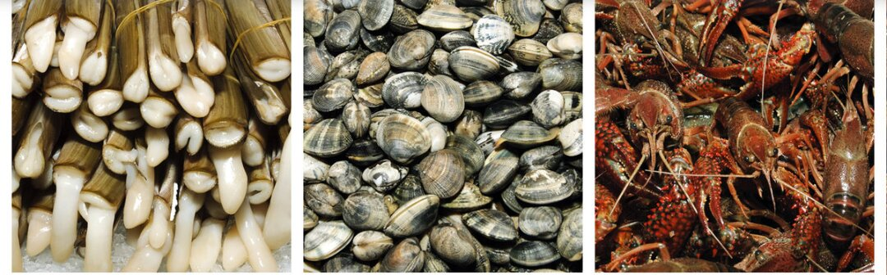

Beneficios de comer pescado y marisco
Son fáciles de cocinar y admiten multitud de preparaciones
- El pescado es un alimento de bajo valor calórico.
- Las proteínas de pescados y mariscos son de alto valor biológico: contienen todos los aminoácidos esenciales en las proporciones que el organismo necesita.
- La grasa del pescado es rica en ácidos grasos poliinsaturados y ácidos grasos esenciales.
- El pescado contiene de forma natural ácidos grasos omega-3, beneficiosos para la salud.
- El pescado aporta vitaminas del grupo B, y el graso o azul aporta además una importante cantidad de vitaminas liposolubles como la A, la D y la E.
- El pescado es rico en minerales como el yodo, el calcio, el fósforo y el selenio.
- Los mariscos son generalmente bajos en calorías y ricos en proteínas y minerales (calcio, hierro, yodo, cinc, selenio, fósforo y potasio).
- Son alimentos sabrosos, de fácil masticación y digestión.
- Por su calidad nutricional, el consumo de pescados y mariscos es una alternativa adecuada a otros alimentos con alto valor proteico pero peor calidad de grasa.
- Son fáciles de cocinar y admiten multitud de preparaciones.